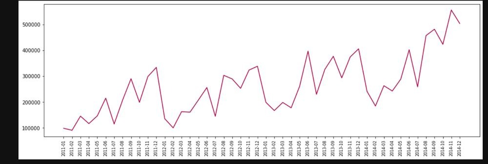
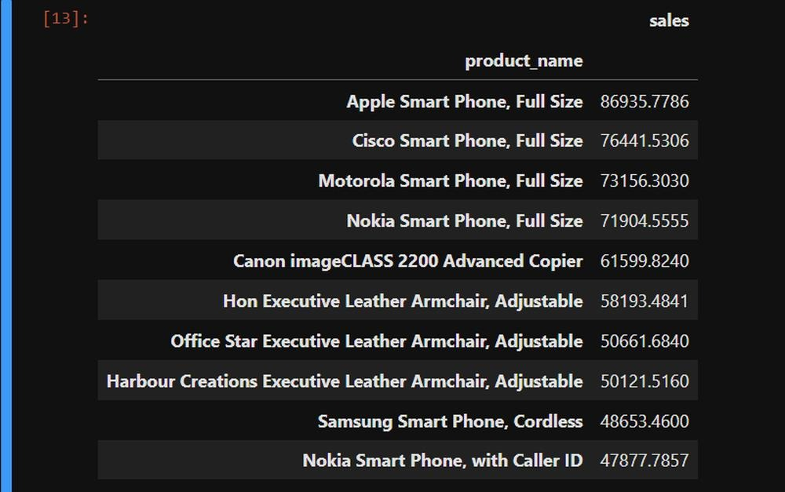
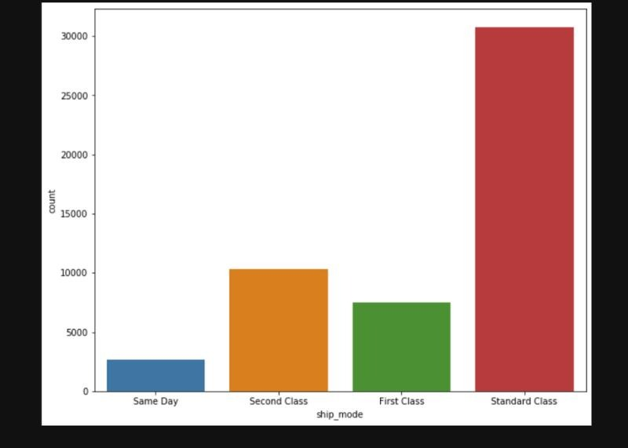
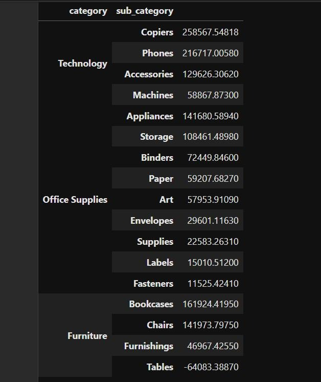

Sales Analysis for Retail Data
Objective
This project aims to conduct exploratory data analysis (EDA) on retail sales data using Python and the Pandas library. It seeks to derive insights into sales trends, top products, preferred shipping modes, and profitable product categories and sub-categories.
Project Overview
Importing Required Libraries
Essential libraries like Pandas, Matplotlib, and Seaborn are imported for data manipulation and visualization.
Importing the Dataset
The dataset 'superstore_sales.xlsx' is loaded into a Pandas DataFrame for analysis.
Data Audit
Tasks include:
- Displaying the first five rows of the dataset.
- Determining dataset shape (rows and columns).
- Listing dataset columns.
- Providing a summary of data, including data types and non-null counts.
- Checking for missing values.
Exploratory Data Analysis (EDA)
a. Overall Sales Trend
Extracting 'month_year' from 'order_date' column. Grouping data by 'month_year' and calculating total monthly sales. Visualizing sales trend with a line plot.
b. Top 10 Products by Sales
Grouping data by 'product_name' and calculating total sales for each product. Sorting products by sales and selecting top 10.
c. Most Preferred Ship Mode
Creating a count plot to show distribution of ship modes.
d. Most Profitable Category and Sub-Category
Grouping data by 'category' and 'sub_category' to calculate total profit. Sorting values to identify most profitable categories and sub-categories.
Conclusion
This project illustrates how Pandas, Matplotlib, and Seaborn can be used for thorough data analysis. Insights gained about sales trends, top products, shipping preferences, and profitable categories/sub-categories can guide business decisions and strategies, enhancing retail operations and profitability. It serves as a practical example of data analysis in the retail sector, highlighting Python and Pandas for data-driven decision-making.